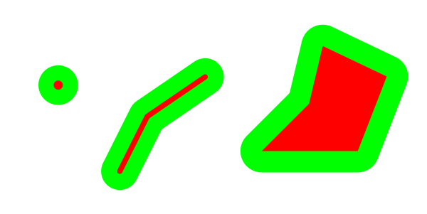
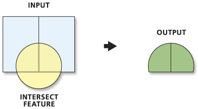
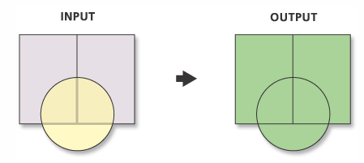
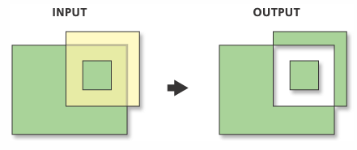

Teach how to use easyGIS
{{item.nr}}. {{item.name}} Description: {{item.desciption}}
Different GIS operations
 Buffer (green) around point, line and polygon (red)
Intersection: Returns the part of intersect that overlaps with the input layer.
 Union: Overlapping geometries is joined together to one geometry
 Difference: Returns the areas the two input layers that do not overlap